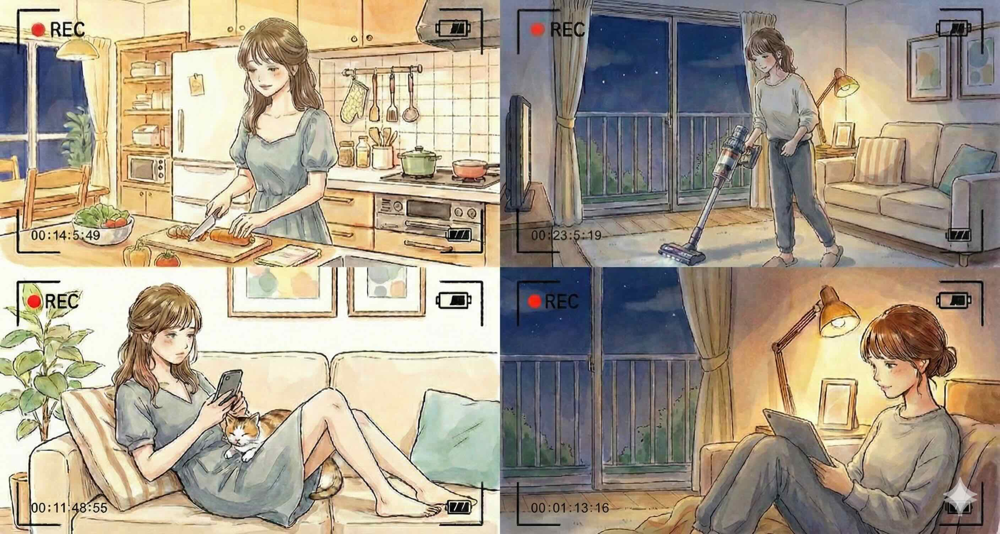

「何か特別なことをしなきゃいけないの？」
いいえ！過激なことや、無理な演技は一切不要です。

あなたが普段している「家事」や「リラックスタイム」を、スマホやカメラで撮るだけ！
例えるなら、「少しだけカメラを意識した日常」を過ごすだけです。
あとは私たちが魔法をかけて、あなた専用のファンクラブを作ります！
① 誰にもバレない（最新AIマジック🪄）
あなたのお顔や声は、最新のAI技術で変身させます！家族や職場、友達にバレる心配はありません。
② 個別のやり取りはナシ🙅♀️
ファンと直接会ったり、個人的なメッセージのやり取りをすることは「禁止ルール」にしています。すべてスマホの中で、安全な距離感を保って完結します。
③ 面倒な作業は「ぜんぶ丸投げ」🏢
動画のカット編集、テロップ入れ、SNS（インスタ等）への投稿、ファン対応は、すべてプロの運営チームが代わりにやります！
（週1回・約60分だけ！）
カメラを固定して、いつもの生活を「撮りっぱなし」にしてください。
🎬 例えばこんなシーンでOK！
・🍳 朝、キッチンでコーヒーを淹れる
・🧺 いつも通りに掃除や洗濯をする
・🛋️ ソファでゴロゴロしながらスマホを見る
・🌙 夜、お部屋の明かりを落としてくつろぐ
撮り終わったら、データを私たちに渡すだけでお仕事完了です✨
運営チームがあなたのファンクラブを育てます。そこから出た「売上の数10%」が毎月口座に入ります💸
ファンが定着して軌道に乗れば、「ただ普段の生活をしているだけなのに、毎月数十万円のお小遣いが入ってくる」状態を作ることを目指しています！
現状はテスト段階のため、内容は柔軟に対応します。
一緒にあなたらしいファンビジネスを作っていきましょう！